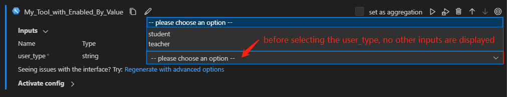
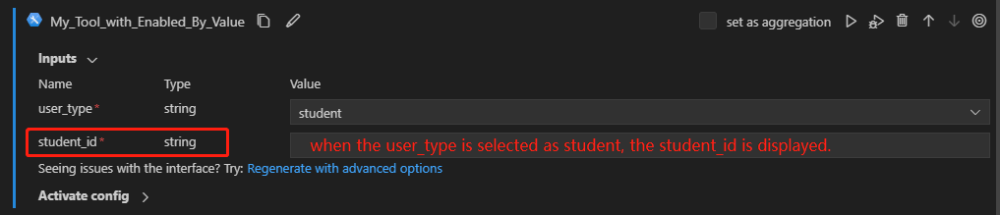
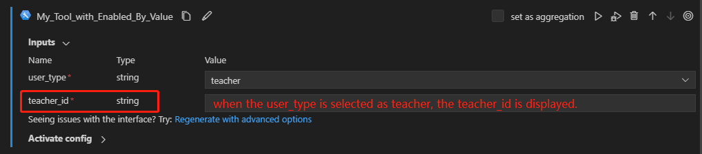

Creating Cascading Tool Inputs#
Cascading input settings are useful when the value of one input field determines which subsequent inputs are shown. This makes the input process more streamlined, user-friendly, and error-free. This guide will walk through how to create cascading inputs for your tools.
Prerequisites#
Please make sure you have the latest version of Prompt flow for VS Code installed (v1.2.0+).
Create a tool with cascading inputs#
We’ll build out an example tool to show how cascading inputs work. The student_id and teacher_id inputs will be controlled by the value selected for the user_type input. Here’s how to configure this in the tool code and YAML.
Develop the tool function, following the cascading inputs example. Key points:
Use the
@tooldecorator to mark the function as a tool.Define
UserTypeas an Enum class, as it accepts only a specific set of fixed values in this example.Conditionally use inputs in the tool logic based on
user_type.
from enum import Enum
from promptflow import tool
class UserType(str, Enum):
STUDENT = "student"
TEACHER = "teacher"
@tool
def my_tool(user_type: Enum, student_id: str = "", teacher_id: str = "") -> str:
"""This is a dummy function to support cascading inputs.
:param user_type: user type, student or teacher.
:param student_id: student id.
:param teacher_id: teacher id.
:return: id of the user.
If user_type is student, return student_id.
If user_type is teacher, return teacher_id.
"""
if user_type == UserType.STUDENT:
return student_id
elif user_type == UserType.TEACHER:
return teacher_id
else:
raise Exception("Invalid user.")
Generate a starting YAML for your tool per the tool package guide, then update it to enable cascading:
Add
enabled_byandenabled_by_valueto control visibility of dependent inputs. See the example YAML for reference.The
enabled_byattribute specifies the input field, which must be an enum type, that controls the visibility of the dependent input field.The
enabled_by_valueattribute defines the accepted enum values from theenabled_byfield that will make this dependent input field visible.
Note:
enabled_by_valuetakes a list, allowing multiple values to enable an input.
my_tool_package.tools.tool_with_cascading_inputs.my_tool:
function: my_tool
inputs:
user_type:
type:
- string
enum:
- student
- teacher
student_id:
type:
- string
# This input is enabled by the input "user_type".
enabled_by: user_type
# This input is enabled when "user_type" is "student".
enabled_by_value: [student]
teacher_id:
type:
- string
enabled_by: user_type
enabled_by_value: [teacher]
module: my_tool_package.tools.tool_with_cascading_inputs
name: My Tool with Cascading Inputs
description: This is my tool with cascading inputs
type: python
Use the tool in VS Code#
Once you package and share your tool, you can use it in VS Code per the tool package guide. We have a demo flow you can try.
Before selecting a user_type, the student_id and teacher_id inputs are hidden. Once you pick the user_type, the corresponding input appears.



FAQs#
How do I create multi-layer cascading inputs?#
If you are dealing with multiple levels of cascading inputs, you can effectively manage the dependencies between them by using the enabled_by and enabled_by_value attributes. For example:
my_tool_package.tools.tool_with_multi_layer_cascading_inputs.my_tool:
function: my_tool
inputs:
event_type:
type:
- string
enum:
- corporate
- private
corporate_theme:
type:
- string
# This input is enabled by the input "event_type".
enabled_by: event_type
# This input is enabled when "event_type" is "corporate".
enabled_by_value: [corporate]
enum:
- seminar
- team_building
seminar_location:
type:
- string
# This input is enabled by the input "corporate_theme".
enabled_by: corporate_theme
# This input is enabled when "corporate_theme" is "seminar".
enabled_by_value: [seminar]
private_theme:
type:
- string
# This input is enabled by the input "event_type".
enabled_by: event_type
# This input is enabled when "event_type" is "private".
enabled_by_value: [private]
module: my_tool_package.tools.tool_with_multi_layer_cascading_inputs
name: My Tool with Multi-Layer Cascading Inputs
description: This is my tool with multi-layer cascading inputs
type: python
Inputs will be enabled in a cascading way based on selections.